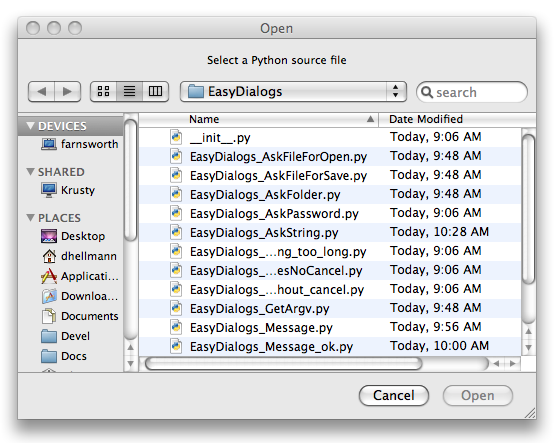
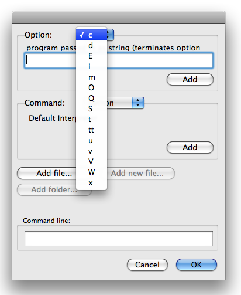

EasyDialogs – Carbon dialogs for Mac OS X¶
| Purpose: | Provides simple interfaces to Carbon dialogs from Python. |
|---|---|
| Python Version: | At least 2.0, Macintosh-only (see References below for a Windows implementation) |
The EasyDialogs module includes classes and functions for working with simple message and prompt dialogs, as well as stock dialogs for querying the user for file or directory names. The dialogs use the Carbon API. See Apple’s Navigation Services Reference for more details about some of the options not covered in detail here.
Messages¶
A simple Message function displays modal dialog containing a text message for the user.
import EasyDialogs
EasyDialogs.Message('This is a Message dialog')

It is easy to change the label of the “OK” button using the ok argument.
import EasyDialogs
EasyDialogs.Message('The button label has changed', ok='Continue')
ProgressBar¶
The ProgressBar class manages a modeless dialog with a progress meter. It can operate in determinate (when you know how much work there is to be done) or indeterminate (when you want to show that your app is working, but do not know how much work needs to be done) modes. The constructor takes arguments for the dialog title, the maximum value, and a label to describe the current phase of operation.
In determinate mode, set the maxval argument to the number of steps, amount of data to download, etc. Then use the incr() method to step the progress from 0 to maxval.
import EasyDialogs
import time
meter = EasyDialogs.ProgressBar('Making progress...',
maxval=10,
label='Starting',
)
for i in xrange(1, 11):
phase = 'Phase %d' % i
print phase
meter.label(phase)
meter.inc()
time.sleep(1)
print 'Done with loop'
time.sleep(1)
del meter
print 'The dialog should be gone now'
time.sleep(1)

$ python EasyDialogs_ProgressBar.py
Phase 1
Phase 2
Phase 3
Phase 4
Phase 5
Phase 6
Phase 7
Phase 8
Phase 9
Phase 10
Done with loop

The dialog should be gone now
Explicitly deleting the ProgressBar instance using del removes it from the screen.
If you are measuring progress in uneven steps, use set() to change the progress meter instead of incr().
import EasyDialogs
import time
meter = EasyDialogs.ProgressBar('Making progress...',
maxval=1000,
label='Starting',
)
for i in xrange(1, 1001, 123):
msg = 'Bytes: %d' % i
meter.label(msg)
meter.set(i)
time.sleep(1)
Simple Prompts¶
EasyDialogs also lets you ask the user for information. Use AskString to display a modal dialog to prompt the user for a simple string.
import EasyDialogs
response = EasyDialogs.AskString('What is your favorite color?', default='blue')
print 'RESPONSE:', response

The return value depends on the user’s response. It is either the text they enter:
$ python EasyDialogs_AskString.py
RESPONSE: blue
or None if they press the Cancel button.
$ python EasyDialogs_AskString.py
RESPONSE: None
The string response has a length limit of 254 characters. If the value entered is longer than that, it is truncated.
import EasyDialogs
import string
default = string.ascii_letters * 10
print 'len(default)=', len(default)
response = EasyDialogs.AskString('Enter a long string', default=default)
print 'len(response)=', len(response)

$ python EasyDialogs_AskString_too_long.py
len(default)= 520
len(response)= 254
Passwords¶
Use AskPassword to prompt the user for secret values that should not be echoed back to the screen in clear-text.
import EasyDialogs
response = EasyDialogs.AskPassword('Password:', default='s3cr3t')
print 'Shh!:', response
$ python EasyDialogs_AskPassword.py
Shh!: s3cr3t
The Ok/Cancel behavior for AskPassword is the same as AskString.
Files and Directories¶
There are special functions for requesting file or directory names. These use the native file selector dialogs, so the user does not have to type in the paths. For example, to ask the user which file to open, use AskFileForOpen.
import EasyDialogs
import os
filename = EasyDialogs.AskFileForOpen(
message='Select a Python source file',
defaultLocation=os.getcwd(),
wanted=unicode,
)
print 'Selected:', filename
The wanted=unicode argument tells AskFileForOpen to return the name of the file as a unicode string. The other possible return types include ASCII string, and some Apple data structures for working with file references.
By specifing defaultLocation, this example initializes the dialog to the current working directory. The user is still free to navigate around the filesystem.
Other options to AskFileForOpen let you filter the values displayed, control the type codes of files visible to the user, and interact with the dialog through callbacks. Refer to the module documentation and Apple’s reference guide for more details.
$ python EasyDialogs_AskFileForOpen.py
Selected: /Users/dhellmann/Documents/PyMOTW/in_progress/EasyDialogs/EasyDialogs_AskFileForOpen.py
To prompt the user to provide a new filename when saving a file, use AskFileForSave.
import EasyDialogs
import os
filename = EasyDialogs.AskFileForSave(
message='Name the destination',
defaultLocation=os.getcwd(),
wanted=unicode,
)
print 'Selected:', filename

$ python EasyDialogs_AskFileForSave.py
Selected: /Users/dhellmann/Documents/PyMOTW/in_progress/EasyDialogs/new_file.py
If you need the user to select a directory, existing or new, use AskFolder. The dialog includes a button to let them create a new folder.
import EasyDialogs
import os
filename = EasyDialogs.AskFolder(
message='Name the destination',
defaultLocation=os.getcwd(),
wanted=unicode,
)
print 'Selected:', filename

$ python EasyDialogs_AskFolder.py
Selected: /Users/dhellmann/Documents/PyMOTW/in_progress/EasyDialogs
GetArgv¶
An unusually complex dialog, GetArgv lets the user build a command line string by selecting options from menus. It uses a variation of the getopt syntax to describe the valid options, and returns a list of strings that can be parsed by getopt. In my research this week, I found some scripts that use GetArgv if the user does not specify arguments on the command line.
Let’s look at an example that builds a command using the options supported by the Python interpreter.
import EasyDialogs
arguments = EasyDialogs.GetArgv([
('c=', 'program passed in as string (terminates option list)'),
('d', 'Debug'),
('E', 'Ignore environment variables'),
('i', 'Inspect interactively after running'),
('m=', 'run library module as a script (terminates option list)'),
('O', 'Optimize generated bytecode'),
('Q=', 'division options: -Qold (default), -Qwarn, -Qwarnall, -Qnew'),
('S', "don't imply 'import site' on initialization"),
('t', 'issue warnings about inconsistent tab usage'),
('tt', 'issue errors about inconsistent tab usage'),
('u', 'unbuffered binary stdout and stderr'),
('v', 'verbose (trace import statements)'),
('V', 'print the Python version number and exit'),
('W=', 'warning control (arg is action:message:category:module:lineno)'),
('x', 'skip first line of source, allowing use of non-Unix forms of #!cmd'),
],
commandlist=[('python', 'Default Interpreter'),
('python2.5', 'Python 2.5'),
('pyhton2.4', 'Python 2.4'),
],
addoldfile=True,
addnewfile=False,
addfolder=False,
)
print arguments

The first argument is a list of tuples containing the option specifier and a text description. The specifier can contain a single letter for simple boolean switches; a letter followed by colon (”:”) or equals sign (“=”) for single letter options that take an argument; several letters for long-form switches (“opt” translates to “–opt”); or several letters followed by colon or equal sign for long options taking an argument. The option description is a string displayed in the dialog.
The dialog is divided into 4 sections. At the top is the list of options you specified. The user can select an option from the list. If the option takes an argument, a text field is displayed so the user can provide a value. The Add button inserts the selected option into the command line field at the bottom of the dialog.

The second argument to GetArgv is a list of commands and descriptions. The user can select a command to be included in the argument list from the menu in the middle of the dialog.

The arguments addoldfile, addnewfile, and addfolder control the sensitivity of the buttons in the third section of the dialog. In this example, only the Add file... button is enabled because the Python interpreter does not take directories or missing files as arguments.
At the bottom of the dialog is the command line being constructed by the user. When they press OK, GetArgv returns a list of all of the options that looks like sys.argv.
$ python EasyDialogs_GetArgv.py
['python', '-d', '-v', '/Users/dhellmann/Documents/PyMOTW/in_progress/EasyDialogs/EasyDialogs_GetArgv.py']
See also
- EasyDialogs
- The standard library documentation for this module.
- Navigation Services Reference
- Documentation for Apple’s API for working with file objects under Mac OS X.
- EasyDialogs for Windows
- A version of this module that runs under Windows.
- optparse-gui
- A replacement for GetArgv that works with optparse instead.
- EasyGui
- A similar portable library for creating simple graphical user interfaces.